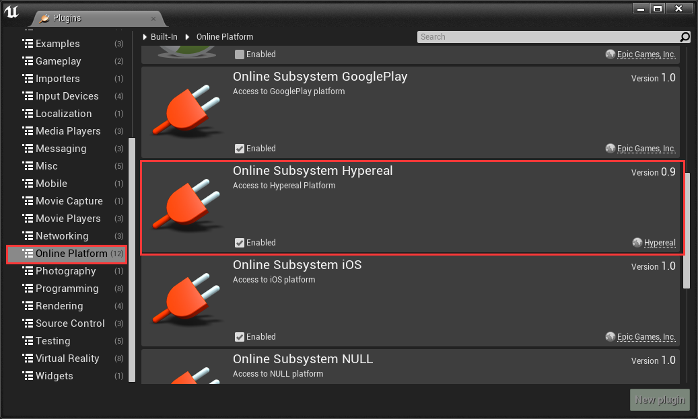

Setup¶
1.Enable the Online Subsystem Hypereal in Edit > Plugin > Online Platform. 
2.Turn on some settings in the your project's DefaultEngine.ini:
[OnlineSubsystem]
DefaultPlatformService=Hypereal
[OnlineSubSystemHypereal]
bEnabled=true
HyperealAppId=your_app_id
You can apply your App ID from Hypereal developer center.
3.If you develop with cpp project , you should add the following to your build.cs file:
PrivateDependencyModuleNames.Add("OnlineSubsystem");
Known Issue¶
If you set Hypereal as default platform service，the Hypereal OnlineSubSystem and these blueprints would not work properly in the Init Event of the GameInstance when you play in editor. But it work well with "Standalone Game","Launch Game" and packaged game.